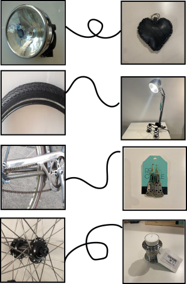

Recycled Producten
Het recyclen van fietsonderdelen voor het maken van accessoires en andere producten vind ik een waanzinnige manier van hergebruiken. De recycled producten biedt namelijk de consumenten unieke producten met een verhaal aan. Hier zijn een aantal voorbeelden.
